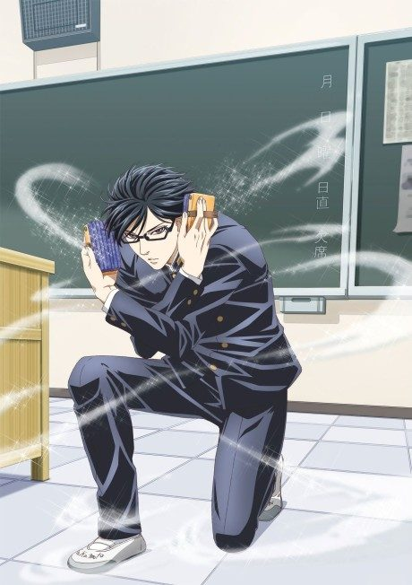

Anime
Manga
2016 · Comedy, Slice of Life
Haven't You Heard? I'm Sakamoto
坂本ですが?
AniList7.3
Animeter—
Episodes12 ep
MangaDone
Watch order
In airing order. Episode numbers on this site count straight through every season, so season 2 starts at episode —.
1
2016 · TV
Haven't You Heard? I'm Sakamoto
Episodes1–1212 ep
Films, OVAs and specials
Not counted in the episode numbers above.
·
2016 · OVA
Haven't You Heard? I'm Sakamoto: Haven’t You Heard? I was Sakamoto
Sources: AniList